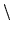
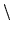

nodename = name [ "%" ( "%"
The syntax rules for the textual definition of the network are as follows. Each node in the network has a nodename. This node name will normally correspond to a word in the final syntax network. Additionally, for use in compatibility mode, each node can also have an external name.
name = char{char}
nodename = name [ "%" ( "%"  name ) ]
name ) ]
Here char represents any character except one of the meta chars
{ } [ ] 

 = $ ( ) ;
 / *. The latter may,
however, be escaped using a backslash. The first name in a nodename
represents the name of the node (``internal name''), and the second optional name is
the ``external'' name. This is used only in compatibility mode, and is, by default
the same as the internal name.
= $ ( ) ;
 / *. The latter may,
however, be escaped using a backslash. The first name in a nodename
represents the name of the node (``internal name''), and the second optional name is
the ``external'' name. This is used only in compatibility mode, and is, by default
the same as the internal name.
Network definitions may also contain variables
variable = $nameVariables are identified by a leading $ character. They stand for sub-networks and must be defined before they appear in the RHS of a rule using the form
subnet = variable ``='' expr ``;''An expr consists of a set of alternative sequences representing parallel branches of the network.
expr = sequence {``'' sequence}
sequence = factor{factor}
Each sequence is composed of a sequence of factors where a factor
is either a node name, a variable representing some sub-network or
an expression contained within various sorts of brackets.
factor = ``('' expr ``)''
``{'' expr ``}''
`` '' expr ``
'' expr `` ''
''
``['' expr ``]''
``'' expr ``''
nodename
variable
Ordinary parentheses are used to bracket sub-expressions, curly braces { } denote zero or more repetitions and angle brackets denote one or more repetitions. Square brackets [ ] are used to enclose optional items. The double angle brackets are a special feature included for building context dependent loops and are explained further below.
Finally, the complete network is defined by a list of sub-network
definitions followed by a single expression within parentheses.
] are used to enclose optional items. The double angle brackets are a special feature included for building context dependent loops and are explained further below.
Finally, the complete network is defined by a list of sub-network
definitions followed by a single expression within parentheses.
network = {subnet} ``('' expr ``)''
Note that C style comments may be placed anywhere in the text of
the network definition.
As an example, the following network defines a syntax for some simple edit commands
$dir = up | down | left | right;
$mvcmd = move $dir | top | bottom;
$item = char | word | line | page;
$dlcmd = delete [$item]; /* default is char */
$incmd = insert;
$encmd = end [insert];
$cmd = $mvcmd|$dlcmd|$incmd|$encmd;
({sil} < $cmd {sil} > quit)
Double angle brackets are used to construct contextually consistent context-dependent loops such as a word-pair grammar.17.9This function can also be used to generate consistent triphone loops for phone recognition17.10. The entry and exit conditions to a context-dependent loop can be controlled by the invisible pseudo-words TLOOP_BEGIN and TLOOP_END. The right context of TLOOP_BEGIN defines the legal loop start nodes, and the left context of TLOOP_END defines the legal loop finishers. If TLOOP_BEGIN/TLOOP_END are not present then all models are connected to the entry/exit of the loop.
A word-pair grammar simply defines the legal set of words that can follow each word in the vocabulary. To generate a network to represent such a grammar a right context-dependent loop could be used. The legal sentence set of sentence start and end words are defined as above using TLOOP_BEGIN/TLOOP_END.
For example, the following lists the legal followers for each word in a 7 word vocabulary
ENTRY - show, tell, give
show - me, all
tell - me, all
me - all
all - names, addresses
names - and, names, addresses, show, tell, EXIT
addresses - and, names, addresses, show, tell, EXIT
and - names, addresses, show, tell
HPARSE can generate a suitable lattice to represent this word-pair grammar by using the following specification:
$TLOOP_BEGIN_FLLWRS = show|tell|give;
$TLOOP_END_PREDS = names|addresses;
$show_FLLWRS = me|all;
$tell_FLLWRS = me|all;
$me_FLLWRS = all;
$all_FLLWRS = names|addresses;
$names_FLLWRS = and|names|addresses|show|tell|TLOOP_END;
$addresses_FLLWRS = and|names|addresses|show|tell|TLOOP_END;
$and_FLLWRS = names|addresses|show|tell;
( sil <<
TLOOP_BEGIN+TLOOP_BEGIN_FLLWRS |
TLOOP_END_PREDS-TLOOP_END |
show+show_FLLWRS |
tell+tell_FLLWRS |
me+me_FLLWRS |
all+all_FLLWRS |
names+names_FLLWRS |
addresses+addresses_FLLWRS |
and+and_FLLWRS
>> sil )
where it is assumed that each utterance begins and ends with sil
model.
In this example, each set of contexts is defined by creating a variable whose alternatives are the individual contexts. The actual context-dependent loop is indicated by the « » brackets. Each element in this loop is a single variable name of the form A-B+C where A represents the left context, C represents the right context and B is the actual word. Each of A, B and C can be nodenames or variable names but note that this is the only case where variable names are expanded automatically and the usual $ symbol is not used17.11. Both A and C are optional, and left and right contexts can be mixed in the same triphone loop.